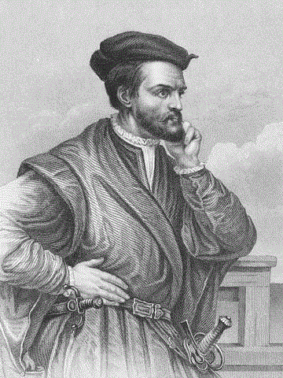
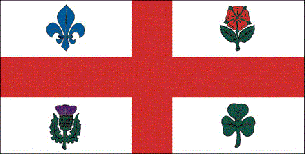

Welcome to Montréal, Canada. Explore the largest city in the province of Québec and witness and experience different tourist destinations and other local spots. Enjoy the views of unique architectures, building design and taste many delicious cuisines all over the city.
History of Montréal
 In 1535, Jacques Cartier arrived in the area of what is now known as Montréal.
An Indian village called Hochelaga occupied the area at the bottom of the mountain. At the highest point of the mountain, Jacques Cartier named it Mount Royal.
In 1642, the first colony was established by Paul de Chomedey.
The French settlers and the Native Iroquois struggled to coexists and fighting between two sides took place until a treaty was settled in 1701.
As a result of the French and Indian War, Montréal surrendered to the british forces in 1760.
In 1832, Montréal officially became a city. It is the second largest French speaking city in the world; only second to Paris.
From 1841 to 1849, Montréal was the capital of Canada.
By mid 19th century, Montréal lead Canada's manufacturing industry producing consumer goods.